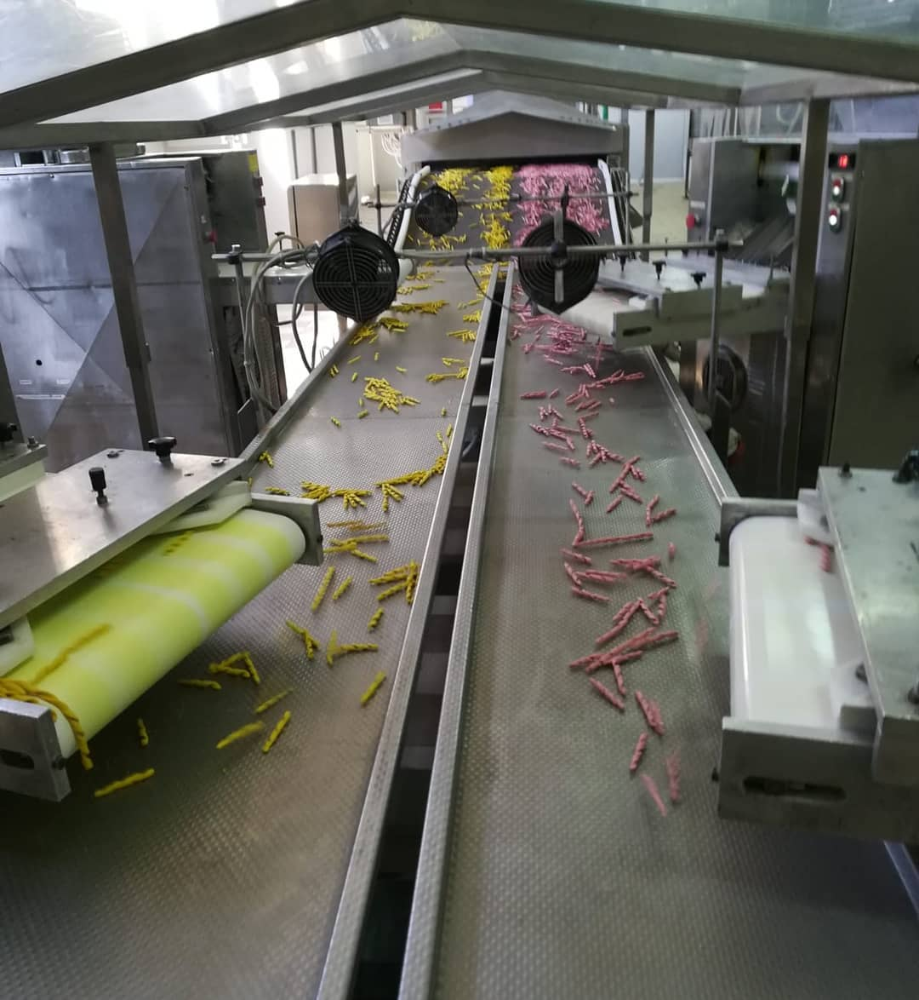
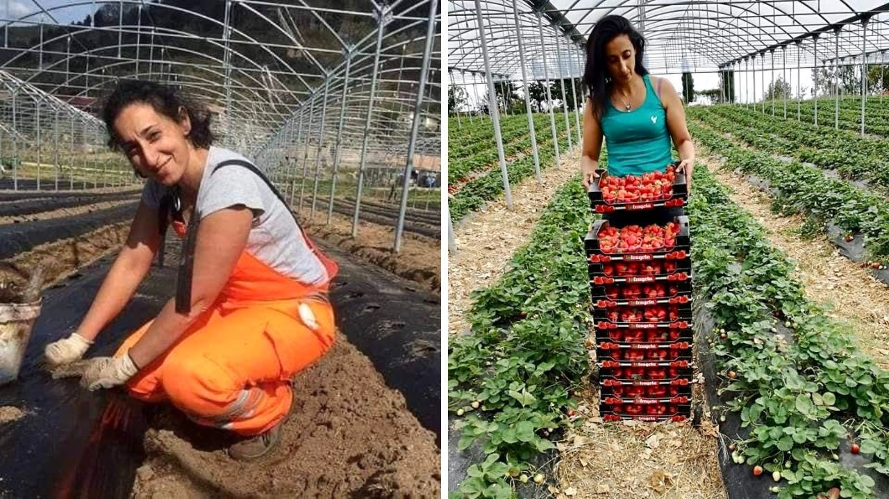
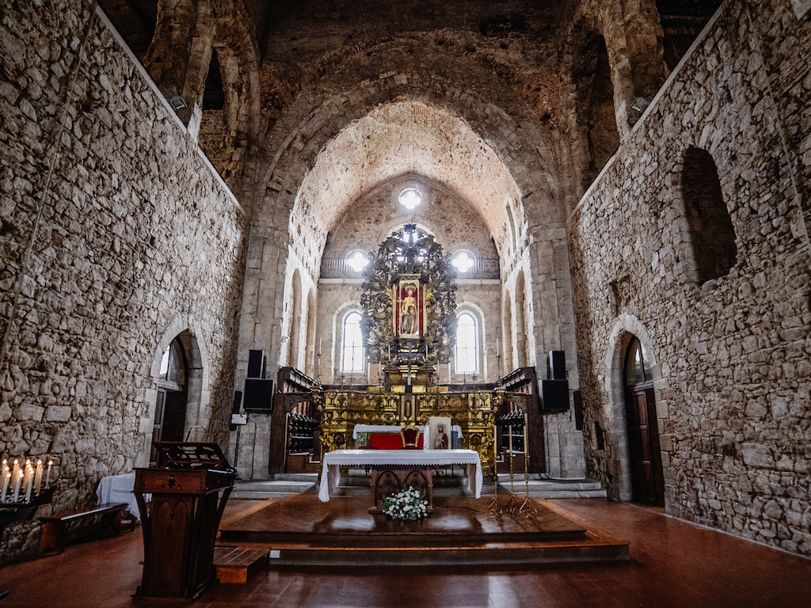

Primo giorno
venerdi
- Mattina: Arrivo a Rende e visita del Museo Civico, del castello Normanno, della Chiesa del Rosario e passeggiata per i vicoli del centro storico.
- Pranzo: Pranzo da “mi’ndujo” in via Marconi n°82, Rende, con i "paninazzi calabresi".
-
Pomeriggio: Visita delle seguenti aziende:
- Forte: Produzione di pasta secca artigianale. Indirizzo: Contrada Cutura n°23, Rende. Prenotazioni: 0984.448258
- Green Garden: Produzione di prodotti di bellezza a base di bava di lumaca per la cura della pelle in modo sostenibile ed ecologico. Indirizzo: Contrada Cutura, Via Spagna, Rende. Prenotazioni: 388.3538076
- Frangiulia: Produzione conserve. Indirizzo: Contrada Cutura, Rende. Prenotazioni: 0984.446961
- Reiol: Produzione e imbottigliamento di Olio EVO. Indirizzo: Contrada Piano di Maio, Rende. Prenotazioni: 392.9993332
- Giraldi & Giraldi: Produzione vini. Indirizzo: Via Don Onofrio n°2, Rende. Prenotazioni: 0984.443449 (con aperitivo e degustazione dei vini Terre di Cosenza).
- Sera: Sistemazione presso il bed and breakfast Villa Bretii, Contrada Iannuzzi, Rende. Prenotazioni: 339.4857636
- Cena: Cena presso il Parco D’Arte Alt Art, via Longiani, Rende. Prenotazioni: 392.6739680

Secondo giorno
Sabato
- Mattina: Sveglia e prima colazione.
- Partenza: Partenza per Camigliatello, con una sosta intermedia presso l’azienda vinicola “Tenuta del Travale” in via Travale n°13, Rovito. Prenotazioni: 393 715 0240 (degustazione dei vini di altissima qualità).
- Arrivo a Camigliatello: Passeggiata sul corso per conoscere i prodotti e la cultura locale. Durante i weekend di ottobre fino ai primi giorni di novembre, si svolge il rinomato “autunno silano”, con stand enogastronomici e spettacoli dal vivo.
- Pranzo: Pranzo presso l’Agriturismo Fattoria Bió con piatti e ricette a base di funghi e non solo. Indirizzo: Contrada Lagarò. Prenotazioni: 368.7629105
- Pomeriggio: Passeggiata presso il centro visite il Cupone, sede del Parco Nazionale della Sila, località Cupone, dove è possibile avvistare numerose specie animali, tra cui il famoso Lupo della Sila, e osservare le tante specie di funghi presenti sull’Altopiano della Sila. Successiva visita dell’azienda agricola Lorenzo Pupo. Prenotazioni: 345.1591494
- Sera: Sistemazione presso il bed and breakfast Staziona e Dormi a Camigliatello, con aperitivo a base di prodotti tipici locali. Prenotazioni: 329 959 0135
- Cena: Cena tipica presso il ristorante Il “Nibbio” in località Moccone. Prenotazioni: 349.5681700

Terzo
Domenica
- Mattina: Sveglia e prima colazione.
-
Partenza: Partenza per San Giovanni in Fiore. Visita delle aziende:
- Dulcis in Fiore: Produzione di pitta ‘mpigliata e dolci tipici. Indirizzo: Viale della Repubblica n°287, San Giovanni in Fiore. Prenotazioni: 0984.1815822
- L’orto di Lidia: Produzione di frutta e ortaggi in una splendida cornice montana. Indirizzo: Contrada Bonolegno, San Giovanni in Fiore. Prenotazioni: 389.8581853
- Casearia Silana: Produzione di Caciocavallo Silano DOP e altri formaggi tipici della Sila. Indirizzo: Contrada Garga SS107, San Giovanni in Fiore. Prenotazioni: 329.5826717
- Pranzo: Pranzo tipico presso il ristorante “I Giganti della Sila” in località Croce di Magara, posizionato all’ingresso della riserva naturale “I Giganti della Sila”. Prenotazioni: 0984.209555
- Pomeriggio: Visita della riserva naturale i Giganti della Sila (Area FAI). Passeggiata tra i pini secolari.
- Sera: Sistemazione presso l’Agriturismo “Il Villaggetto” con cena e pernottamento.

Quarto giorno
Lunedì
- Mattina: Sveglia e prima colazione.
- Visita: Visita di San Giovanni in Fiore e dell’Abbazia Florense. Passeggiata alla scoperta dell’antica tradizione della lavorazione dei tessuti artigianali e degli arazzi, nonché dell’arte orafa.
- Pranzo: Pranzo presso il ristorante “Griglieria Vallefiore”. Indirizzo: Contrada Garga SS107, San Giovanni in Fiore. Prenotazioni: 329.5826717
- Pomeriggio: Partenza ed eventuali soste per acquisti e/o approfondimenti a Camigliatello, Rovito, Rende.